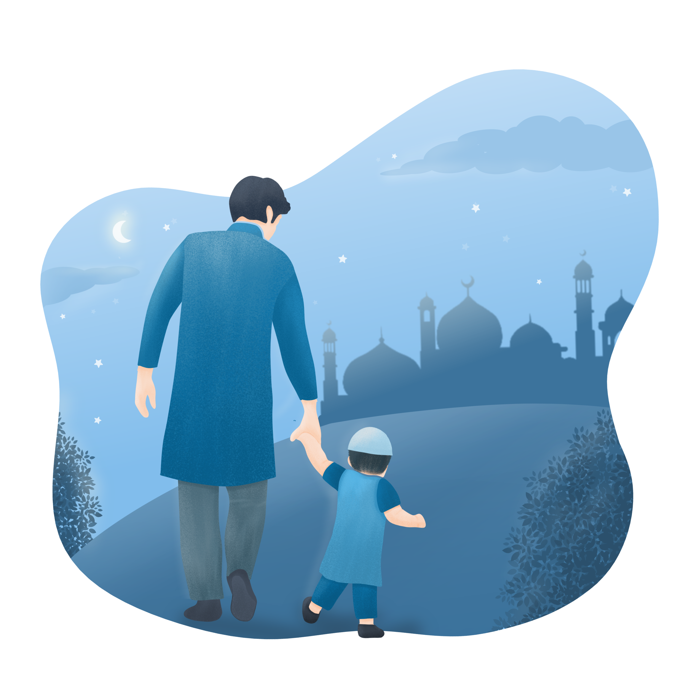
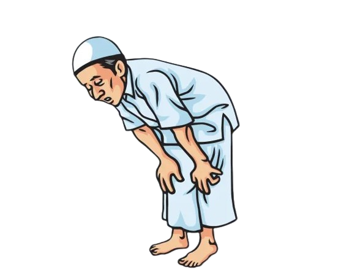
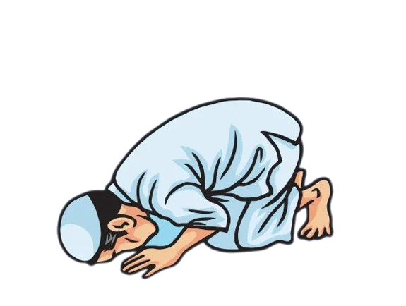
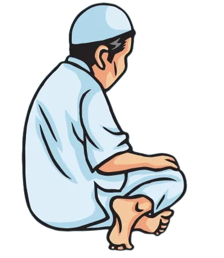
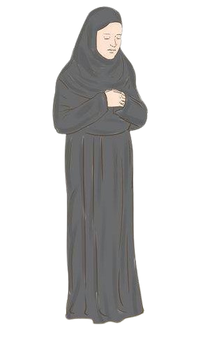

١ - المقدمة
صَلّ مخلصاً لِلَّه ، موافقاً لِصَلَاة نَبِيِّك ﷺ ، فَذَلِك ادَّعَى
لِقَبُولِهَا ، واخشع فِيهَا ، فإنَّ الْأَجْر فِيهَا خَشَعْت فِيه ،
وَصَلَهَا فِي الْمَسْجِدِ جَمَاعَةً ، فإنَّها أَفْضَلُ مِنْ
صَلَاةِ الْفَرْدِ بِسَبْعٍ وَعِشْرِينَ دَرَجَةً ، وَالْمَشْي
لِلْمَسْجِد وَالتَّعَلُّقِ بِهِ وَإِدْرَاكُ تَكْبِيرَةِ
الْإِحْرَامِ وَالصَّفِّ الْأَوَّلِ رَفْعَهُ للدرجات ، وَمِنْ
تَمَامِ الصَّلاة الْحِرْصُ عَلَى تَسْوِيَةِ الصُّفُوفِ والتّراص
فِيهَا كَمَا تَصُفُّ الْمَلاَئِكَةُ عِنْدَ رَبِّهَا ، وتدبَّر مَا
يُتْلَى مِنْ الْآيَاتِ وَمَا يُقَالُ مِنْ الْأَذْكَارِ . .

۲ - الخشوع و الطمأنينة
الْخُشُوع : الْإِقْبَالِ عَلَى الصَّلاة وَالْخُشُوعِ فِيهَا مِنْ
أَهَمِّ الْمُهِمَّاتِ ، لِقَوْلِهِ تَعَالَى : قَدْ أَفْلَحَ
الْمُؤْمِنُونَ الَّذِينَ هُمْ فِي صَلَاتِهِمْ خَشِعُونَ (سورة
الْمُؤْمِنُون : 1-2) .
وَقَوْلُه ﷺ: ( مَا مِن امْرِئٍ
مُسْلِمٍ تَحْضُرُهُ صلاةٌ مَكْتُوبَةٌ فَيُحِسِنُ وُضُوءَهَا
وَخُشُوعَهَا ورُكُوعَهَا إِلَّا كانَتْ كَفَّارَةٌ لِمَا قَبلَهَا
مِنَ الذُّنُوبِ مَا لَمْ يُؤْتِ كَبِيرَةً وَذَلِكَ الدَّهْرَ
كُلَّهُ » (مسلم)
الطُّمَأْنِينَة : وَهِيَ رُكْنٌ إنْ أخللت بِهِ بَطَلَتْ صَلَاتُك
رَأَى حُذَيْفَة رجلًا لَا يَتِمُّ الرُّكُوعَ وَالسُّجُودِ ، قَال :
« مَا صَلَّيتَ ولَو مُتَّ مُتَّ عَلى غَير الفِطْرَةِ الَّتِي
فَطَرَ اللَّهُ محَمَّدًا ﷺ عَلَيْهَا » (البخاري) .
۳ - استقبال القبلة و النية و السترة
إذَا أَرَادَ الْمُصَلِّي الصَّلَاةَ فإنَّه يَتَوَضَّأُ ثُمَّ
يَسْتَقْبِلُ الْقِبْلَةَ قَائِمًا . مَعَ الْقُدْرَةِ فِي
الْفَرِيضَةِ ، ثُمَّ يَنْوِي الصَّلاة الَّتِي يُرِيدُ أَنْ
يُصَلِّيَهَا بِقَلْبِهِ دُونَ النُّطْقِ بِالنِّيَّةِ ، لِقَوْلِه :
« إِنَّما الْأَعْمَالُ بِالنِّيَّاتِ وإنَّمَا لِكُلِّ امرئٍ مَا
نَوَي » (البخاري ومسلم) وَقَوْلُه ﷺ « إِذَا قُمْتَ إِلَى
الصَّلَاةِ فَأَسْبِغ الوُضُوءَ ، ثُمَّ اسْتَقبِلِ الْقِبْلَةَ
فَكَبَّرَ » (البخاري ومسلم)
، وَيُصَلِّي إلَى سُتْرَةٍ
سَوَاءٌ كَانَ إمَامًا أَمْ منفردًا ، لِقَوْلِه : لَا تُصلوا إلَّا
إلَى سُتْرَة (رواه ابْنُ خُزَيْمَةَ وَالْحَاكِمُ بِسَنَدٍ جَيِّدٍ
كَمَا قَالَ الألباني)
. (مسافة السُّتْرَة ثَلَاثَةِ أَذْرُعٍ
تقريبا) .
تنــــــبيه لا يصح التعلق بالنية
كقوله مثلاً، نويت أن أصلي الظهر أربع ركعات) لعدم ثبوته عن النبي
لا ولا عن الصحابة الكرام، بل يكبر ويقرأ دعاء الاستفتاح مباشرة
تنــــــبيه السترة سنة عند أكثر
الفقهاء ولا تبطل الصلاة بدونها، ويكره تركها بدون ضرورة
٤ - موضع النظر في الصلاة
يستحب للمصلي أن ينظر إلى موضع سجوده خلال صلاته كلها عند أكثر
الفقهاء، عدا في تشهده فينظر إلى سبابته اليمني كَانَ إِذَا صَلِّ
طَأطأ رَأْسَهُ وَرَمَى ببصره نَحْوَ الْأَرْضِ ، (أحمد والبيهقي
والحاكم)
ويكره الالتفات يميناً وشمالا، ورفع
البصر إلى الشماء
٥ - التكبير و رفع اليدين
يكبر تكبيرة الإحرام، فيقول: «الله أكبر» ولا بد من قولها باللسان،
ولا يشترط أن يرفع صوته بها، والأخرس يقولها بقلبه
- ١ - و يرفع يديه الي حذو منكبيه (البخاري)
- ۲ - أو يحاذي بهما أذنيه (البخاري)
- ۳ - ويستقبل ببطون أصابعه القبلة.
- ٤ - وكان يرفع يديه تارة مع التكبير، وتارة بعد التكبير،
حدو اذنيه
وتارة قبله (البخاري)
٦ - أماكن رفع اليدين في الصلاة
كان النبي ﷺ يرفع يديه حذو منكبيه، أو حذو أذنيه، في أربعة مواضع فقط:
- ١ - إذا افتتح الصلاة (البخاري و مسلم)
- ۲ - وإذا كبر للركوع (البخاري و مسلم)
- ۳ - وإذا رفع رأسه من الركوع (البخارى و مسلم).
- ٤ - وعند القيام للركعة الثالثة (البخارى و مسلم) بعد التشهد الاول
٧ - وضع اليد اليمني علي اليسري
- ١ - ثم يضع اليمنى على ظهر كفه اليسرى والرسغ والساعد» (ابو داود وصححه الالباني)
- ۲ - أو يقبض باليمنى على اليسرى (ابو داود)
- ۳ - أو يضع يده اليمنى على اليسرى» (مسلم).
- ٤ - وكان يضعهما على الصدر (ابو داود وصححه الالباني)
وقال الإمام الترمذي في السنن بعضهم يضعهما تحت السرة، وبعضهم فوق السرة، وكل ذلك واسع عندهم وهم سلف الأمة.
۸ - دعاء الاستفتاح ثم الاستعاذة، وقراءة الفاتحة، وآيات بعدها
بعد تكبيرة الإحرام الله أكبر» يدعو بدعاء الاستفتاح «اللهم باعد بَيْنِي وَبَيْنَ خَطَايَايَ كَمَا بَاعَدْتَ
بَيْنَ المَشْرِقِ وَالمَغرِبِ، اللهُمَّ نَقِّنِي مِنْ الْخَطَايَا كَمَا يُنَقَّى الثَّوبُ الأبيضُ مِنَ
الدَّنَسِ، اللهُمَّ اغْسِل خَطَايَايَ بِالمَاءِ وَالتَّلْحِ وَالبَردِ » (البخاري ومسلم)
أَعُوذُ بِاللَّهِ مِنَ الشَّيْطَنِ الرَّحِيمِ
بِسمِ اللهِ الرَّحْمنِ الرَّحِيمِ (1) الحَمْدُ لِلَّهِ رَبِّ الْعَلَمِينَ (2) الرَّحْمَنِ الرَّحِيمِ (3)
مَلِكِ يَوْمِ الدِّينِ (4) إِيَّاكَ نَعْبُدُ وَإِيَّاكَ نَسْتَعِينُ (5) اهْدِنَا الصِّرَاطَ الْمُسْتَقِيمَ
(6) صِرَاطَ الَّذِينَ أَنْعَمْتَ عَلَيْهِمْ غَيْرِ الْمَغْضُوبِ عَلَيْهِمْ وَلَا الضَّالِّينَ (7)
(سورة الفاتحة)
يقرأ بخشوع وطمأنينة آية آية، لقوله : «لا صَلَاةَ لَمنْ لَا يَقْرَأُ بِفَاتِحَةِ الكِتَابِ» (البخاري)
ثم يقول: «آمين»، بمعنى: اللهم استجب ، ثم يقرأ بعد الفاتحة ما تيسر من القرآن الكريم، إما سورة كاملةً أو عددًا
من الآيات، ثم إذا فرغ من القراءة؛ سكت سكتة خفيفة، ليركع بعدها.
۹ - أدعية أخرى لاستفتاح الصلاة
كان النبي ﷺ ينوع بأدعية الاستفتاح في الصلاة، ومنها :
- ١ - وَجَهْتُ وَجْهِيَ لِلَّذِي فَطَرَ السَّمَوَاتِ وَالْأَرْضَ حَنِيفًا وَمَا أَنَا مِنَ
الْمُشْرِكِينَ، إِنَّ صَلَاتي وَنُسُكِي وَمحْيَايَ وَمَمَاتِي لِلَّهِ رَبِّ الْعَالَمِينَ لَا شَرِيكَ له
وَبِذَلِكَ أُمِرْتُ وأنا من المُسْلِمِينَ» (مسلم)
- ۲ - سُبْحَانَكَ اللَّهُمَّ وَبِحَمْدِكَ وَتَبَارَكَ اسْمُكَ وَتَعَالَى جَدُّكَ وَلَا إِلَهَ
غَيْرُكَ» (أحمد والترمذي)
- ۳ - الحَمْدُ للهِ حَمْداً كَثِيراً طَيِّباً مُبَارَكاً فِيهِ» (مسلم) .
- ٤ - «اللَّهُ أَكْبَرُ (ثَلَاثا) ذُو الْمَلَكُوتِ وَالْجَبَرُوتِ وَالْكِبْرِيَاءِ وَالْعَظَمَةِ» (أبو
داود بسند صحيح)
- ٥ - اللهُ أَكْبَرُ كَبيراً . وَالْحَمْدُ لِلَّهِ كَثِيراً وَسُبْحَانَ اللَّهِ بُكْرَةً وَأَصِيلًا»
(مسلم)
١٠ - الرُّكُوعَ
- ١ - يَرْكَعُ مُكَبَّرًا «الله أكبر» تكبيرة الانتقال من القيام إلى الركوع
- ۲ - رافعًا يديه حذو منكبيه، أو أذنيه، مستقبلًا ببطون أصابعه القبلة
- ۳ - يضع كفيه على ركبتيه (البخاري).
- ٤ - يُمكنُ أصابع يديه من ركبتيه» (البخاري) كأنه قابض عليها.
- ٥ - يفرج بين أصابع يديه، ويجافي مرفقيه عن جنبيه» (الترمذي)
أي يباعد بينهما ، ولا يؤذي من بجانبه
- ٦ - يجعل رأسه حيال ظهره، لا يرفعه ولا يخفضه، لو صُبَّ
عليه الماء لاستقر» (ابن ماجه، صححه الألباني)
- ٧ - ناظرا إلى موضع سجوده قائلا : سبحان ربي العظيم» ثلاث مرات أو أكثر.

وصية النبي ﷺ في الركوع
يَا مَعْشَرَ الْمُسْلِمِينَ لَا صَلَاةَ لَمنْ لَا يُقِيمُ صُلْبَهُ فِي الرُّكُوعِ وَالسُّجُودِ» (ابن ماجه
بإسناد صحيح)
تنــــــبيه معنى لا يقيم صلبه في الركوع والسجود: أي لا يقيم صلبه بعد الركوع
والسجود
١١ - ادعية اخري في الرُّكُوعَ
- ١ - سبحان ربي العظيم و بحمده» ثلاثا - (أبو داود)
- ۲ - سبوح قدوس رب الملائكة والرُّوح» (مسلم)
- ۳ - سبحانك اللهُمَّ ربَّنا وبحمدك، اللهم اغفر لي (البخاري ومسلم).
- ٤ - «اللهم لك ركَعْتُ وبِكَ آمَنْتُ ولكَ أسْلَمْتُ أَنتَ رَبِّي خَشَعَ لَكَ سَمعي وبصري ومخي
وعَظْمِي وَعَصَبي وَمَا استقلت به قدمي الله ربِّ العالمين» (مسلم)
تنــــــبيه لا تجوز قراءة القرآن في الركوع وكان ينهى عن قراءة القرآن في الركوع
والسجود، (مسلم)
فائدة يجوز التنويع بين هذه الأذكار، كما يجوز الجمع بينها في
ركوع واحد.
١٣ - أدعية أخرى عند الرفع من الركوع
- ١ - ربنا لك الحمد
- ۲ - ربَّنا ولك الحمد.
- ۳ - اللهم ربنا لك الحمد.
- ٤ - اللهم ربنا ولك الحمد.
تنــــــبيه 1- المأموم لا يقول سمع الله لمن حمده ويكتفي بقول، وربنا ولك الحمد
2- من الخطا أن يقول ربنا ولك الحمد والشكر لأنه لم يثبت عن النبي ﷺ
١٤ - السجود
- ١ - ثم يكبر تكبيرة الانتقال من القيام إلى السجود قائلا: «الله أكبر».
- ۲ - واضعا ركبتيه على الأرض قبل يديه، أو يديه قبل ركبتيه (ما تيسر له).
- ۳ - ثم يسجد حتى تطمئن مفاصله » (أبو داود وصححه الألباني)، ويسجد على أعضائه السبعة ويمكنها ؛ لأن كل
عضو
يعتبر من أعضاء السجود، ولا بد من الطمأنينة في السجود.
الأعضاء السبعة: الجبهة مع الأنف الكفان القدمان الركبتان
وإن أخل في أحدها بطلت صلاته.
- ٤ - ويستقبل بصدور قدميه القبلة : (البخاري) بأطراف أصابعها
- ٥ - رافعا الفخذين عن الساقين
- ٦ - رافعا بطنه عن الفخذين، أي: بيعدهما.
- ٧ - اليدان يرفعهما عن الارض ويباعدهما عن جنبه (البخاري) ولا يؤذي من بجانبه، وأصابع
اليدين مضمومتان متوجهتان إلى القبلة ويجعل اليدين
حذو منكبيه أو حذو أذنيه (أبو داود وصححه الألباني)
- ٨ - والقدمان يلصقهما ببعض ويرص عقبيه، وينصب
رجليه ويفرق بين ركبتيه، أي لا يضعهما مع بعض
ويجوز أن يتكي على فخذيه إذا تعب من طول السجود . ولا يبالغ في مد الظهر.
- ٩ - قائلاً: « سبحان ربي الأعلى » (رواه أحمد) ثلاثاً أو أكثر.

تنــــــبيه لا يجوز أن يرفع المصلي عضواً من الأعضاء السبعة في سجوده، أما إذا
رفعها مضطراً بعد سجوده
لسبب ما فلا حرج (مثلاً حكته احدى رجليه فرفع الرجل الأخرى وحكها )
وصية النبي ﷺ في السجود
أَقْرَبُ مَا يَكُونُ الْعَبْدُ مِنْ رَبِّهِ وَهُوَ سَاجِدٌ، فَأَكثرُوا الدُّعَاء» (مسلم) فالدعاء في السجود
مشروع، وينبغي الإكثار منه في أمور الدنيا والآخرة، ويهتم بأمور الآخرة أكثر.
١٥ - أدعية أخرى للسجود
كان النبي ﷺ ينوع في أدعية السجود، ومنها:
- ١ - سُبْحَانَ رَبِّ الأَعْلَى وَبِحَمْدِه ثلاثا، (أبو داود وصححه الألباني)
- ۲ - سبوح قُدُوسٌ رَبُّ المَلائِكَةِ وَالرُّوح (مسلم).
- ۳ - سُبْحَانَكَ اللهُم رَبَّنَا وَبِحَمْدِكَ، اللهُمَّ اغْفِرْ لي (البخاري ومسلم).
- ٤ - سبحَانَكَ اللهُمْ وَبِحَمْدِكَ لَا إِلَهَ إِلَّا أَنتَ (مسلم).
- ٥ - اللهم لَكَ سَجَدْتُ، وَبِكَ آمَنتُ، وَلَكَ اسْلَمْتُ وانت ربي سَجَدَ وَجْهِي لِلَّذِي خَلَقَهُ
وصوره فأحسن صوره وَشَق سَمْعَهُ وبَصَرَهُ، فَتبَارك الله أَحْسَنُ الخَالِقِينَ» (مسلم)
تنــــــبيه لا يجوز قراءة القرآن في السجود (وكان ينهى من قراءة القرآن في
الركوع والسجود) (مسلم)
فائدة يجوز التنويع بين هذه الأذكار، كما يجوز الجمع بينها في سجود واحد.
١٦ - الرفع من السجود و الجلوس بين السجدتين
- ١ - يرفع رأسه من السجود مكبرا (البخاري ومسلم)، قائلا: «الله أكبر»
- ۲ - ثم يفرش رجله اليسرى فيقعد عليها مطمئنا
و ينصب رجله اليمنى (البخاري) جلسة الافتراش.
- ۳ - ويستقبل بأصابعها القبلة (النسائي وصححه الألباني).
- ٤ - أو ينصب قدميه ويجلس على عقبيه (جلسة الإقعاء.
- ٥ - ولا بد أن يطمئن بين السجدتين ثم يقول:
رب اغفر لي رب اغفر لي (ابن ماجه وصححه الألباني)
- ٦ - ثم يهوي مكبرا للسجدة الثانية وهي كالسجدة الأولى
في الكيفية وفيما يقال فيها.
فائدة الدعاء الأخر بين السجدتين رب اغفر لي رب اغفر لي اللهم اغفر لي وارحمني
واهدني واجبرني وارزقني وعافني).
١٧ - جلسة الاستراحة
هي جلسة خفيفة يجلسها المصلي بعد الفراغ من السجدة الثانية من الركعة الأولى قبل النهوض إلى الركعة الثانية،
وبعد الفراغ من السجدة الثانية من الركعة الثالثة قبل النهوض إلى الركعة الرابعة وليس فيها ذكر ولا دعاء.
وللمصلي أن ينهض مباشرة من غير الجلوس للاستراحة إلى الركعة الثانية أو الرابعة معتمدا على يديه أو ركبتيه،
ماتيسر له.
١٨ - جلسة التشهد الأول
بعد الفراغ من الركعة الثانية، يجلس المصلي للتشهد الأول مفترشا (جلسة الافتراش) وتكون في الصلاة الثنائية
كالصبح والجمعة والعيدين، وكذلك في التشهد الأول من
الصَّلاة الثلاثية أو الرباعية.
فإذا كانت الصلاة ثنائية :
- ١ - يجلس ناصبًا رجله اليمنى مستقبلا بأصابعها القبلة،
مفترشا رجله اليسرى »جلسة الافتراش».
- ۲ - يده اليمنى: إما أن يضعها على فخذه اليمني قابضا
أصابعه كلها إلا السبابة فيشير بها إلى التوحيد أو جهة القبلة محركا لها أو يحلق بالإبهام مع الوسطى مشيرا
بالسبابة إلى
التوحيد أو القبلة محركا لها.
- ۳ - يده اليسرى : إما أن يبسطها على فخذه اليسرى ، أو يقبض بها على ركبته اليسرى.
- ٤ - أو يقرأ التحيات لله ... والصلوات الإبراهيمية، ثم يقرأ الأدعية الواردة ثم يسلم عن
يمينه وعن شماله (كما سنبين لاحقا).

تنــــــبيه جلسة الافتراش تكون في تشهد الصلاة الثنائية والتشهد الأول من الصلاة
الثلاثية والرباعية، وفي
الجلوس بين السجدتين.
فائدة إذا لم يستطع المصلي أن يجلس مفترشا أو متوركا لكونه ضخم الجسم، أو يشعر
بالألم في قدمه أو لغير ذلك. من الأسباب فلا حرج عليه أن يجلس كما تيسر له، لقوله تعالى : (فاتقو الله ما
استطعتم) (3) (سورة التغابن).
١٩ - الصلاة الثلاثية والرباعية
إذا كانت الصلاة ثلاثية، كالمغرب أو رباعية كالظهر والعصر والعشاء:
- ١ - يجلس للتشهد الأول بعد الانتهاء من الركعة الثانية مفترشًا ء كما تقدم.
مفترشا رجله اليسرى »جلسة الافتراش».
- ۲ - يقرأ التحيات لله ... ولو زاد الصلوات الإبراهيمية، فلا حرج.
- ۳ - ثم ينهض قائها معتمداً على يديه أو ركبتيه كما تيسر له، مكبراً ، الله أكبر إلى الركعة الثالثة .
- ٤ - يرفع يديه حذو منكبيه أو أذنيه ، كما تقدم .
- ٥ - يضع يمينه على شماله على صدره أو فوق السُّرة أو تحت السُّرة « كما تقدم » .
- ٦ - يقرأ الفاتحة في الركعة الثالثة والرابعة ، ولو زاد على الفاتحة، فلا حرج . .
- ٧ - ثم يجلس للتشهد الأخير متوركا (جلسة التورك) بعد الركعة الثالثة . المغرب ، وبعد الركعة الرابعة من
صلاة الظهر والعصر والعشاء.
٢٠ - جلسة التشهد الثاني والأخير
كان في التشهد الأخير من كل صلاة ذات تشهدين يجلس متوركا لحديث:
وَإِذَا جَلَسَ فِي الرَّكْعَةِ الْآخِرَةِ قَدَّمَ رِجْلَهُ الْيُسْرَى وَنَصَبَ الْأُخْرَى وَقَعَدَ
عَلَى مَقْعَدَتِهِ » (البخاري).
جلسة التورك لها صفات ثابته
- ١ - أن يفرش رجله اليسرى وينصب اليمني، ويخرجهما من الجانب الأيمن، ويجعل أليتيه على الأرض.
- ۲ - أو يفرش القدمين جميعا ويخرجها من الجانب الأيمن ويجعل اليتيه على الأرض
- ۳ - يلقم كفه اليسرى ركبته اليسرى ويعتمد عليها، وَكَانَ يلقم كَفَّهُ الْيُسْرَى رَكَبَتَهُ (مسلم).
تنــــــبيه جلسة التورك في التشهد الأخير فقط من الصلاة
الثلاثية والرباعية
٢١ - قراءة التحيات والصلاة على النبي ﷺ
التحيات
- ١ - التَّحِيَّاتُ لِلهِ وَالصَّلَوَاتُ وَالطَّيِّبَاتُ السَّلَامُ عَلَيْكَ أَيُّهَا النَّبِيُّ
وَرَحْمَةُ اللهِ وَبَرَكَاتُهُ السَّلَامُ عَلَيْنَا وَعَلَى عِبَادِ اللهِ الصَّالِحِينَ ، أَشْهَدُ أَنْ
لَا إِلَهَ إِلَّا اللَّهُ وَأَشْهَدُ أَنَّ مُحَمَّدًا عَبْدُهُ وَرَسُولُهُ» (البخاري ومسلم)
الصلاة الابراهيمية
- ۲ - اللَّهُمَّ صَلِّ عَلَى مُحَمَّدٍ وَعَلَى آلِ مُحَمَّدٍ كَمَا صَلَّيْتَ عَلَى إِبْرَاهِيمَ وَعَلَى
آلِ إِبْرَاهِيمَ إِنَّكَ حَمِيدٌ مَجِيدٌ ، اللَّهُمَّ بَارِكْ عَلَى مُحَمَّدٍ وَعَلَى آلِ مُحَمَّدٍ
كَمَا بَارَكْتَ عَلَى إِبْرَاهِيمَ وَعَلَى آلِ إِبْرَاهِيمَ إِنَّكَ حَمِيدٌ مَجِيدٌ» (البخاري)
تنــــــبيه توجد صيغ أخرى صحيحة للتحيات والصلوات الإبراهيمية.
٢٢ - الأدعية الواردة بعد التحيات والصلاة على النَّبِيِّ ﷺ
- ١ - ثمَّ يستعيذ بالله من أربع: «اللَّهُمَّ إِنِّي أَعُوذُ بِكَ مِنْ عَذَابِ جَهَنَّمَ، وَمِنْ عَذَابِ
الْقَبْرِ، وَمِنْ فِتْنَةِ الْمَحْيَا وَالْمَماتِ، وَمِنْ شَرِّ فِتْنَةِ المَسِيحَ الدَّجَّالِ» (مسلم)
- ۲ - ثم يقول «اللَّهُمَّ أَعِني عَلَى ذِكْرِكَ ، وَشُكْرِكَ، وَحُسْنِ عِبَادَتِكَ » (أبو داود والنسائي
)
ويدعو بما شاء من خَيْري الدُّنيا والآخرة، ولو دعا لوالديه وأئمة المسلمين وعامتهم فخير، لقوله
«ثُمَّ لْيَتَخَيَّرُ مِنَ الدُّعَاءِ أَعْجَبَهُ إِلَيْهِ فَيَدْعُو (البخاري)
تنــــــبيه توجد صيغ أخرى صحيحة للتحيات والصلوات الإبراهيمية.
٢٣ - التسليمتان
- ١ - ثم يسلم عن يمينه قائلا: « السّلام عليكم ورحمة الله » منحرفاً برأسه إلى اليمين حتى يرى من وراءه
بياض خده
الحديث عامر بن سعد عن أبيه قال: «كنتُ أَرَى النَّبِيَّ ﷺ يُسَلِّمُ عَن يَمِينِهِ وعَنْ
يَسَارِهِ حَتَّى يُرَى بَيَاضُ خَدَّه» (مسلم)
- ۲ - ثم يسلم عن يساره قائلا « السّلام عليكم ورحمة الله » منحرفاً برأسه إلى
اليسار حتى يرى من وراءه بياض خده الأيسر.
تنــــــبيه التسليمة الأولى ركن، والالتفات سنه والتلفظ به ركن.
٢٤ - صلاة المرأة
تنــــــبيه المرأة في ما سبق كله كالرجل لشمول الخطاب لها في قوله : (صلوا كما
رأيتموني أصلي).
فائدة المرأة إذا صلت تستر جميع بدنها ما عدا الوجه والكفين ويكون اللباس فضفاضا
واسعًا غير لاصق أو ضيق.

الكتاب - حقوق الملكية
أسم الكتـــاب : صفة صلاة النبي ﷺ
تابع لجمعية احياء التراث الاسلامي
الرميثية و سلوي
الطابعة الثالثة
تحميل الكتـــــاب
التحمــيل